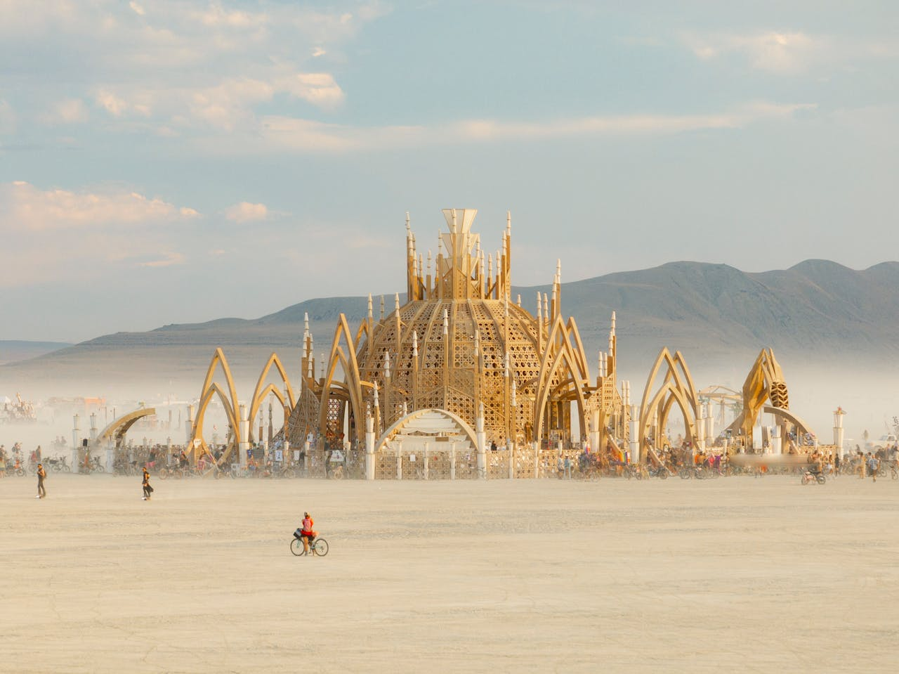
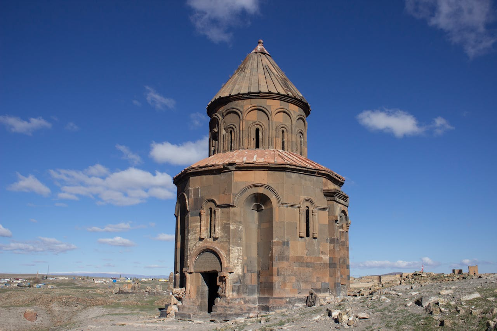
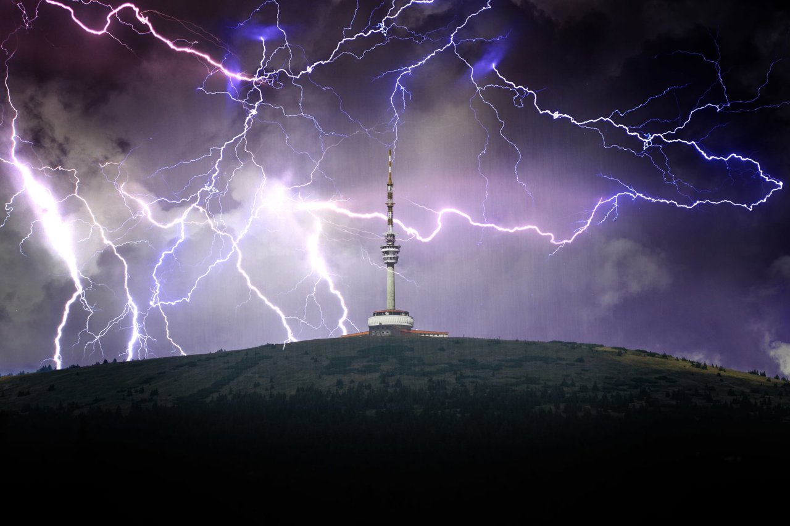
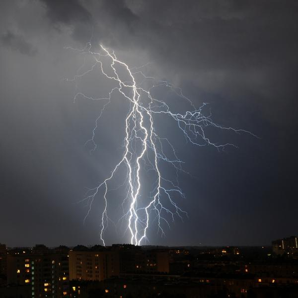

Estructura Desierto
Al ver esta imagen, me hace pensar en lo increíble que estaría ahí. El ambiente desértico, la estructura imponente ya la vez tan efímera, parece sacado de un sueño. Todo el escenario transmite una sensación de libertad y creatividad, con ese toque de misticismo que se respira en eventos como el Burning Man. Me encantaría algún día experimentar en persona esa mezcla de arte, comunidad y naturaleza en su estado más puro. Imagino andar en bicicleta por esos caminos de polvo, rodeado de instalaciones que parecen pertenecer a otro mundo, todo mientras me dejo llevar por la atmósfera de colaboración y expresión artística que definen este tipo de encuentros.
Estructura Antigua
Esta imagen me transporta a un lugar lleno de historia y misterio. La estructura parece ser una iglesia antigua, solitaria en medio de un paisaje vasto, con su fachada desgastada por el tiempo pero aún de pie, como testigo silencioso de eras pasadas. Me encantaría visitar un lugar como este, donde la arquitectura nos cuenta historias de antiguas civilizaciones y culturas. Imagino caminar entre las ruinas, sintiendo la conexión con el pasado mientras contempla los detalles de la construcción, el silencio interrumpido solo por el viento. Sería un viaje fascinante, lleno de reflexión y admiración por lo que aún perdura después de tanto tiempo.
IPedro Pedro Pedro
¡El video del mapache bailando con la canción de "Pedro, Pedro" es de lo más gracioso que he visto en mucho tiempo! Me encanta cómo el ritmo de la música parece encajar perfectamente con sus movimientos torpes pero llenos de actitud. No pude dejar de reír cuando lo vi por primera vez. Hay algo tan inesperado y divertido en ver a un animal que normalmente se asocia con robar comida o meterse en problemas, moviéndose como si estuviera en una fiesta. Definitivamente es uno de esos videos que puedes ver mil veces y no dejar de reír. ¡Simplemente me encanta!

Truenos
Me encanta observar los truenos en las noches lluviosas. Hay algo fascinante en el contraste entre la oscuridad del cielo y los destellos de luz que atraviesan las nubes. Me quedo mirando por la ventana, escuchando el sonido de la lluvia mientras los truenos retumban en la distancia. Es como si la naturaleza misma estuviera mostrando todo su poder y belleza en un espectáculo único. Me resulta muy relajante y, a la vez, emocionante.
Esa combinación de calma y energía me atrapa por completo, y podría pasar horas simplemente contemplando ese momento.
Imagenes de Truenos
 En la fotografía, una torre de luz solitaria se alza en medio de un vasto campo abierto. La imagen, capturada en el momento justo, muestra el instante en que varios rayos caen simultáneamente sobre la estructura metálica, iluminando el cielo oscuro con su fulgor eléctrico. Los cables que salen de la torre parecen vibrar con la energía de los truenos, mientras las nubes densas y cargadas de lluvia pintan el fondo con tonos grises y morados, creando un contraste dramático.
El campo alrededor de la torre, en contraste, parece tranquilo, casi indiferente al espectáculo celestial. La vegetación, algo agitada por el viento que trae la tormenta, apenas se distingue en la penumbra. La luz que generan los rayos ilumina por breves instantes los detalles del terreno, pero todo lo demás se mantiene bajo la sombra amenazante del cielo. Es como si la naturaleza y la tecnología estuvieran teniendo un duelo épico en este momento congelado en el tiempo.
Lo más impactante es la sensación de energía pura que emana de la imagen. Los truenos parecen canalizar toda su fuerza en la torre, y la fotografía captura no solo la luz, sino la vibración y el poder de la tormenta. Es un recordatorio impresionante de la fuerza incontrolable de la naturaleza, que en cualquier momento puede desatarse con toda su intensidad sobre el mundo, dejando una sensación de asombro y respeto por su poder.
Hace unos días intenté capturar una imagen de un rayo cayendo en la ciudad desde mi casa, pero ninguna foto salió como esperaba. La tormenta estaba en pleno apogeo, y desde mi ventana podía ver cómo los rayos iluminaban los edificios a lo lejos. Preparé la cámara y traté de sincronizar el momento perfecto, pero cada vez que presionaba el obturador, o llegaba tarde, o los truenos aparecían justo fuera de cuadro. La imagen que tenía en mente era una en la que el rayo cayera entre los edificios, iluminando el horizonte de la ciudad con su energía descomunal, mientras las luces de las ventanas titilaban a lo lejos. Quería ese contraste entre la naturaleza salvaje y la tranquilidad aparente de la vida urbana, pero cada intento me dejaba con fotos de cielos oscuros y relámpagos que se escapaban en el último segundo. Aunque no logré la toma que esperaba, la experiencia fue emocionante. Cada destello me llenaba de una mezcla de expectación y frustración, pero también de respeto hacia la naturaleza. A veces, la naturaleza no se deja capturar tan fácilmente, y creo que ahí está su magia.
Mi behance
Bueno pues aprovechando estas fotografias y algunas cosas que me gusta hacer, pasense por mi behance, en donde encontraran todo tipo de trabajos desde animaciones, dibujos, mockups, poster, logos y mucho más. Siempre dando el estilo que me caracterisa para poder ser yo en cada trabajo que realizo, espero les guste y si si dejen un corazoncito
Yo desde la perspectiva de mi novia
Esta fotografía, tomada por mi novia, captura un momento especial desde su perspectiva, donde se puede sentir su cariño en cada detalle. La imagen me muestra relajado, con una expresión que mezcla tranquilidad y naturalidad. Lo que la hace aún más interesante es que la vamos a editar con varios filtros, cada uno resaltando algo diferente.